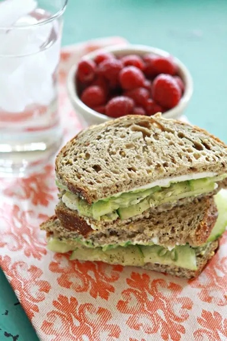

Avocado White Bean Sandwich

Description:
This quick and nutrient packed sandwich is great for an on-the-go lunch.
This recipe only takes about 5 minutes!
Ingredients:
- 1 Avocado, quartered
- 1/2 Lime, juice of
- 1/2 of 15 oz can White beans, drained and rinsed
- 1/2 Cucumber, sliced
- 2 Tbsp cilantro lime hummus (or flavor of choice)
- Salt, pepper, and garlic to taste
- 4 slices whole wheat bread (or bread of choice)
- 1 handful Spinach
Directions:
- Toast bread
- Pour white beans into a medium bowl and mash a little with a potato masher
- Add in the avocado and lime juce, mash until just a few chunks of bean and avocado are left
- Stir in the salt, pepper, and garlic to taste
- Spread hummus onto the toast
- Scoop the mix onto the bread
- Top with cucumbers, spinach, and other desired toppings